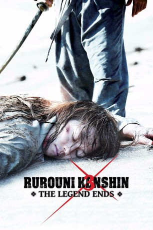

#1797 Rurouni Kenshin - The Legend Ends
Alternativ: Rurôni Kenshin: Densetsu no saigo-hen (Originaltitel)
 
 IMDB-Wertung: 7.6 / 10
IMDB-Wertung: 7.6 / 10  Metascore: 0
Metascore: 0 
Der letzte Kampf von Kenshin Himura (Takeru Satô) gegen den verbrannten und bandagierten Makoto Shishio (Tatsuya Fujiwara) und seiner Elitekampfgruppe Juppongatana steht nun kurz bevor. Eigentlich wollte Kenshin sein Schwert nie wieder erheben, aber nachdem er erfahren hat, dass die Mitglieder der Juppongatana die Segel ihres eisernen Schiffes gesetzt haben und sich auf dem Weg nach Japan befinden, um die Meiji-Regierung zu Fall zu bringen und das Land ins Chaos zu stürzen, musste er sein eigenes Versprechen brechen und wieder zu seinem Schwert greifen. Um aber eine Chance im Kampf zu haben, trainiert Kenshin mit seinem alten Meister. Er will die finale Technik von ihm erlernen.
Jahr: 2014
Dauer: 134 Minuten
FSK: 16
Land: Japan Studio: Splendid FilmTonspuren:
Untertitel: Deutsch,
Auflösung: 1080p (1920x808) Größe: 7219 MB
Genre: Action, Drama, Abenteuer
Regisseur: Keishi Ohtomo
Drehbuch: Nobuhiro Watsuki, Sean Whitley, Kiyomi Fujii, Keishi Ohtomo
Soundtrack: Naoki Satô
Darsteller:
 Tatsuya Fujiwara als Makoto Shishio
Tatsuya Fujiwara als Makoto Shishio- Emi Takei als Kaoru Kamiya
- Yukiyoshi Ozawa als Hirobumi Ito
 Yû Aoi als Megumi Takani
Yû Aoi als Megumi Takani Yûsuke Iseya als Aoshi Shinomori
Yûsuke Iseya als Aoshi Shinomori- Masaharu Fukuyama als Seijuro Hiko
 Min Tanaka als Okina / Nenji Kashiwazaki
Min Tanaka als Okina / Nenji Kashiwazaki- Takeru Satô als Kenshin Himura
 Ryûnosuke Kamiki als Sôjirô Seta
Ryûnosuke Kamiki als Sôjirô Seta- Tao Tsuchiya als Misao Makimachi
 Yôsuke Eguchi als Hajime Saitô
Yôsuke Eguchi als Hajime Saitô- Munetaka Aoki als Sanosuke Sagara
- Lisa Ulliel als
- Tomomi Maruyama als Anji Yukyuzan
- Hiroko Yashiki als Kamatari Honjyou
- Maryjun Takahashi als Yumi Komagata
- Maya Fukuzawa als
- Ken'ichi Takitô als Hoji Sadojima
- Ryosuke Miura als Cho Sawagejo
- Mitsu Murata als Usui Uonuma
- Kentarô Shimazu als Saiduchi
- Kaito Ohyagi als Yahiko Myojin
- Nayuta Fukuzaki als Shinta(young Kenshin
- Kazufumi Miyazawa als Toshimichi Okubo
- Yûya Hara als Henya Kariwa
- Tôru Kizu als
- Takao Yamada als Iwanbou
- Kôta Yamaguchi als Fuji
Datei: X:\HD-Eastern-Collections\Rurouni Kenshin\Rurouni Kenshin - The Legend Ends (2014, FSK16, 1920x808).mkv seit 23.08.2015
Festplatte: HD Eastern+Western
 Alle Filme aus Gruppe 'HD-Eastern-Collections\Rurouni Kenshin'
Alle Filme aus Gruppe 'HD-Eastern-Collections\Rurouni Kenshin'